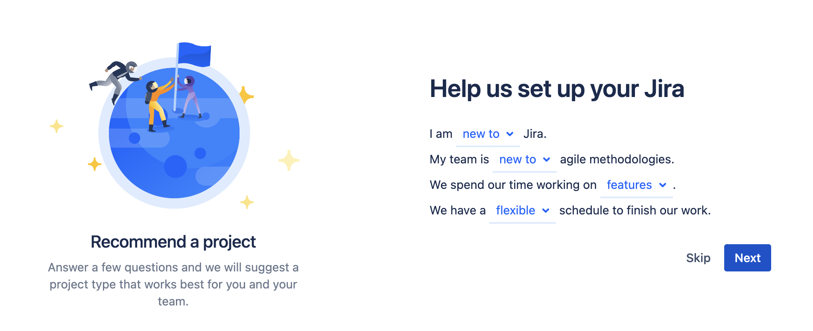
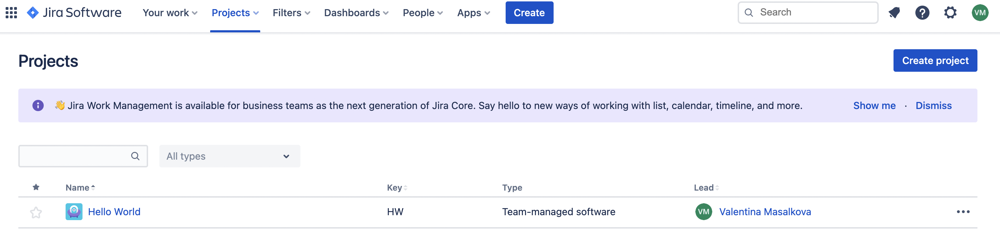
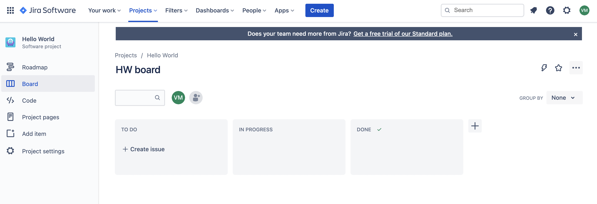
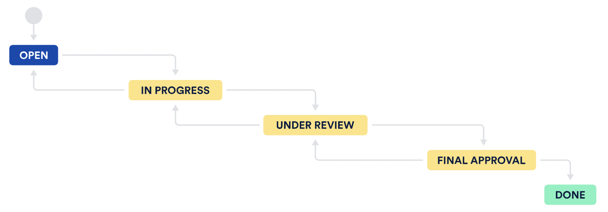

Jira
Jira Software is built for every member of your software team to plan,
track, and release software.
Choosing project type

Structure of the tool

Issues and development process

- Task - small, descent type of work
- Subtask - piece of work to be done to complete task
- Bug - problem found in project
- Epic - global abstract view of what we are creating, that can be broken down on smaller tasks
- Story - piece of work to be done to complete epic
- Custom types
Process
stages that issue goes through on the way to be done and it represents the working process
Standard project structure

Scrum hierarchy
- Project owner - responsible for the whole project, a person who deals with what customer wants to create
- Scrum master - deals with the flow of information between product owner and development team, manages activities of development team
- Scrum team - all employees that are responsible for product development and completing tasks
Thank you for attention!:)